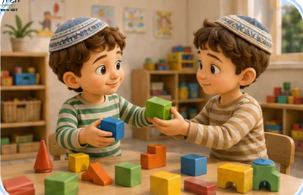
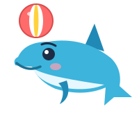

משחקי CBT
סדרת משחקים קצרים שמלמדים ילדים להכיר מחשבות, רגשות ותחושות בגוף, ולבחור צעד שעוזר.
💡 מומלץ לשחק לפי הסדר. משחקים 4 ו־5 מלמדים על מלכודות חשיבה, והם בנויים על מה שלומדים ב־1 עד 3.
🖨️ לשחק בלי מסך

אותות הגוף · ערכה להדפסה
קלפים, לוח מיון, משחק זיכרון ותעודה, להורים, למורים ולמטפלים.

מחשבה אדומה, מחשבה ירוקה · ערכה להדפסה
לגן: כרטיסי סיפור עם תמונות, כרטיסי רגשות ומחשבות, לוח רמזור ותעודה.
ועוד בסדרה

מודל הדולפין 🎬
סרטון: כריש, סרדין ודולפין, שלושה יועצים שבתוכנו.